항공기사 (2010-07-25 기출문제)
1과목: 항공역학
1. 다음 중 헬리콥터 주 회전날개의 플래핑의 원인이 아닌 것은?
- 받음각의 불균일성
- 회전 날개의 원추각
- 공력하중의 비대칭성
- 주 회전날개 깃의 비틀림각
(정답률: 6%)

2. 헬리콥터가 이상적인 루프비행을 하는 과정 중 수직상승 할 때의 양력은?
- 2G
- W+CF
- CF
- 0
(정답률: 12%)
3. 무게가 3300kgf 인 비행기의 중심위치를 2m 전방으로 이동할 경우 어떤 모멘트의 변화와 같은가?
- 후방 20m 인 곳에 400kg을 가하는 모멘트
- 전방 30m 인 곳에 400kg을 가하는 모멘트
- 전방 20m 인 곳에 330kg을 가하는 모멘트
- 후방 30m 인 곳에 330kg을 가하는 모멘트
(정답률: 28%)
4. 유도항력(Induced drag)의 직접적인 발생 원인으로 옳은 것은?
- 초음속 충격파에 의하여
- 날개 끝 자유와류에 의하여
- 날개표현의 거칠기에 의하여
- 동체 단면적의 증가에 의하여
(정답률: 56%)
5. 항공기 최대 착륙중량(maximum landing weight) 이란?
- 착륙이 가능한 최대 승객, 화물 중량
- 착륙 때 보유할 수 있는 최대 연료중량
- 정상적으로 착륙할 수 있는 항공기의 최대 중량
- 이륙전 최대 탑재 연료량과 착륙 때 갖고 있는 연료 중량의 차이
(정답률: 53%)
6. 비행기가 정적 안정이 되고, 동적으로도 안정이 되어 있다면 외부에서 교란을 받았을 경우 어떠한 운동을 하는가?
- 주기성 감쇠운동을 한다.
- 주기성 중립운동을 한다.
- 주기성 증폭운동을 한다.
- 비주기성 증폭운동을 한다.
(정답률: 30%)
7. 얇은 날개이론에 의한 아음속 2차원 대칭날개의 받음각에 대한 양력계수 변화율은?
- 1/π
- 1
- π
- 2π
(정답률: 18%)
8. 그림과 같이 이상기체의 공기가 원통중위를 지나가고 있을 때 원통주변의 압력과 흐름속도에 대한 설명으로 옳은 것은? (단, θ는 원의 중심과 기체가 흘러오는 방향을 기점으로 시계방향으로 증가하는 각도이다.)
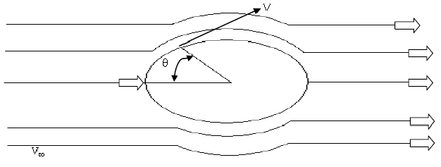
- θ=0° 에서 압력과 속도는 0 이다.
- θ=30° 에서 압력은 0 이며 속도는 기체 흐름의 속도와 같다.
- θ=45° 에서 압력은 1 이며 최대 속도이다.
- θ=90° 에서 압력은 최대이며 속도는 0 이다.
(정답률: 17%)
9. 폭이 3m, 길이 10m 인 매끈한 날개가 50m/s 의 유체 흐름 속에 놓여 있을 때 앞전에서 부터 1m 뒤쪽의 경계층 두께는 약 몇 cm인가? (단, 동점성계수 1.5×10-5 m2/s 이며, 경계층 두께식은 층류의 L. prandtl 식을 이용하기 위하여 유체흐름은 층류로 가정한다. )
- 0.28
- 0.52
- 0.63
- 0.73
(정답률: 7%)
10. 비행기의 무게가 8600kgf 이고, 날개면적이 60m2로 수평비행 시 플랩을 사용하지 않을 때 실속 속도가 80 m/s 라면, 장착 된 플랩의 30%를 사용할 때 실속 속도는 몇 m/s가 되겠는가? (단, 플랩의 30% 사용 시 30%의 코드 증가, 100%의 최대양력계수 증가 효과가 있다. )
- 56.6
- 70.2
- 113.2
- 120.3
(정답률: 7%)
11. 속도 포텐셜 함수가 Φ=-5xy 일 때 유동장의 속도 벡터는? (단, I, j는 x, y 방향의 단위벡터이다. )
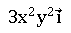
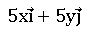
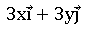
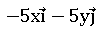
(정답률: 0%)
12. 프로펠러이 효율을 구하는 식으로 옳은 것은? (단, J:전진비, CT:추력계수, CP:동력계수 이다.)
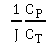
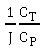
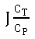
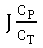
(정답률: 18%)
13. 다음 중 항공기의 세로 안정성에 대하여 정적 중립상태(Trim condition)를 나타낸 것은? (단, CM은 무게 중심에 대한 피칭 모멘트 계수, α 는 받음각이다.)
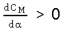
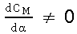
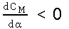
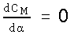
(정답률: 12%)
14. 날개단면(Airfoil) NACA 2412 에서 최대 캠버의 크기는 시위의 몇 % 인가?
- 2
- 4
- 12
- 20
(정답률: 5%)
15. 후퇴각을 가진 날개의 공력특성에 대한 설명으로 옳은 것은?
- 임계마하수를 낮춘다.
- 익단실속을 유발한다.
- 세로안전성을 돕는다.
- 저속비행시 최대 양력계수를 높인다.
(정답률: 16%)
16. 다음 중 항공기 중량에 영향을 받지 않는 것은?
- 상승률
- 항속거리
- 활공각
- 이륙거리
(정답률: 18%)
17. 해면고도에서 온도가 섭씨 15℃ 라면, 고도 10000m에서의 온도는 몇 K 인가?
- 78
- 115
- 135
- 223
(정답률: 17%)
18. 다음 중 음파의 전파속도를 나타낸 식이 아닌 것은? (단, P:압력, ρ:공기 밀도, K:비열비, R:기체상수, T:온도, g:중력 가속도 이다.)
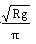
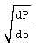
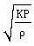
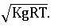
(정답률: 11%)
19. 항공기가 선회각 45°로 수평정상 선회를 할 때 항공기의 하중배수(Load factor)는?
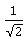
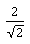
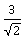
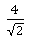
(정답률: 6%)
20. 프로펠러 항공기의 비행 속도를 V1, 프로펠러를 통과하는 공기 속도를 V라고 할 때, 프로펠러의 이론 효율을 나타낸 식은?
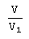
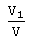
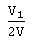
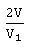
(정답률: 11%)
2과목: 항공기동력장치
21. 연소 후 생성되는 물이 수증기로 변화 할 때 사용 되는 증발열을 제외한 연료의 열량을 무엇이라 하는가?
- 고위발열량
- 생성발열량
- 저위발열량
- 연소발열량
(정답률: 13%)
22. 작동 중 기관속도를 일정하게 유지하기 위하여 블레이드 각이 자동적으로 변하는 프로펠러의 명칭은?
- 정속 프로펠러(constant-speed propeller)
- 고정피치 프로펠러(Fixed pitch propeller)
- 조정피치 프로펠러(Adjustable pitch propeller)
- 가변피치 프로펠러(Controllable pitch propeller)
(정답률: 12%)
23. 고고도에서 제트기관 추력은 저고도에 비해 어떻게 달라지는가?
- 증가한다.
- 감소한다.
- 변하지 않는다.
- 저속에서 감소하다가 고속에서는 증가한다.
(정답률: 12%)
24. 정속 프로펠러에서 기관의 회전수(rpm)을 감지하는 것은?
- Flyweight
- Tachometer
- Speeder spring
- Speed adjusting control lever
(정답률: 12%)
25. 가스터빈기관 배기제트의 분사방향을 노즐의 변형이나 회전을 통해서 바꾸어 항공기 자세제어에 사용하는 방법은?
- 추력편향제어
- 추력중심제어
- 추력벡터제어
- 추력평균제어
(정답률: 6%)
26. 가스터빈기관의 캔형 연소실(Can-type combustor)에 대한 설명으로 옳은 것은?
- 각 캔마다 점화기(igniter)가 설치된다.
- 내부연결관(inter connector tube)은 각각의 연소실에 압력을 일정하게 해주어 연소불안정을 방지시키는 역할을 한다.
- 라이너 냉각에 대류냉각과 침출냉각이 함께 사용된다.
- 환형에 비해 구조가 복잡해서 개발하는 비용이 비싸다.
(정답률: 6%)
27. 항공기에서 발생하는 소음에 노출되어 있는 지속 시간에 대한 영향을 포함시켜 나타내는 소음인 유효감각소음 레벨의 단위는?
- dB(A)
- PNdB
- EPNdB
- WECPNL
(정답률: 6%)
28. 터보 팬 기관이 정지 상태에서 공기 중량유량 60lbf/s를 흡입하여 1300ft/s 배기 속도로 분출한다면 추력은 약 몇 lbf 인가?
- 1322.4
- 2422.4
- 7959.2
- 78000
(정답률: 12%)
29. 가스터빈기관의 이상적인 열역학 사이클은?
- Ericsson cycle
- Rankine cycle
- Brayton cycle
- Carnot cycle
(정답률: 12%)
30. 내부 에너지 30kcal, 압력 4기압, 체적 2m3 인 계의 엔탈피는 약 몇 kcal 인가?
- 193.6
- 223.6
- 282.7
- 325.2
(정답률: 0%)
31. 항공기 왕복기관에서 배기밸브(Exhaust valve)가 실제로 닫히는 시기는?
- 배기 행정 말 하사점 전
- 배기 행정 말 상사점 전
- 흡기 행정 초 상사점 후
- 흡기 행정 초 하사점 후
(정답률: 0%)
32. 가스터빈기관의 축류압축기 스테이터(Stator)에 대한 설명으로 옳은 것은?
- 공기의 운동에너지를 압력으로 바꾸어 주고, 선회 유동을 형성시켜 준다.
- 공기의 운동에너지를 압력으로 바꾸어 주고, 다음 단에 요구되는 각도로 유입되도록 공기의 방향을 바꾸어 준다.
- 압축기로부터 동력을 전달 받아 공기의 운동에너지를 증가시키고, 다음 단에 요구되는 각도로 유입되도록 공기의 방향을 바꾸어준다.
- 압축기로부터 동력을 전달받아 공기의 운동에너지를 증가시키고, 선회유동을 형성시켜 준다.
(정답률: 12%)
33. 다음 중 왕복기관의 성능에 대한 설명으로 틀린 것은?
- 비행고도가 높아질수록 왕복기관의 출력은 저하된다.
- 고정피치 프로펠러를 장착한 기관에서 프로펠러 회전수가 증가하면 기관의 출력이 증가한다.
- 흡기압(MAP)과 회전수가 높을수록 기관의 출력은 증가한다.
- 연공비(fuel/air ratio)가 높아질수록 왕복기관의 출력은 계속 증가한다.
(정답률: 7%)
34. 다음 중 가역, 단열과정(Reversible, adiabatic process)인 것은?
- 등압과정(Isobaric process)
- 등온과정(Isothermal process)
- 정적과정(Constant-volume process)
- 등엔트로피 과정(Isentropic process)
(정답률: 12%)
35. 4행정 사이클, 4실린더 기관의 실제 흡입 공기량이 1117.5cc라면 체적 효율은 약 몇 % 인가? (단, 실린더 지름과 행정은 모두 78mm이다.)
- 60
- 65
- 70
- 75
(정답률: 7%)
36. 일반적으로 사용하고 있는 대형 가스터빈기관의 연료조절장치(Fuel control unit)에 입력되는 신호가 아닌 것은?
- 기관 오일 온도
- 기관 회전수(rpm)
- 압축기 입구 온도
- 추력레버(Thrust lever) 위치
(정답률: 12%)
37. 가스터빈기관을 시동하는 중 배기가스온도(EGT)가 한계값을 초과하여도 공회전수(Idle)에 도달하지 못하는 현상은?
- 시동불능(No start)
- 저속시동(Slow start)
- 과열시동(Hot start)
- 결핍시동(Hung start)
(정답률: 0%)
38. 가스터빈기관의 연료계통을 정비작업 후 연료계통의 누설검사(Leak check)를 위해 실시하는 기관 작동 점검방법의 명칭은?
- 웨트 모터링(Wet motoring)
- 아이들 작동(Idle operating)
- 드라이 모터링(Dry motoring)
- 기계적 모터링(Mechanical motoring)
(정답률: 6%)
39. 항공기 연료탱크레 설치되어 있으며 닉관의 시동, 이륙, 착륙, 고고도 비행 시에 연료의 공급압력을 높여주기 위해 사용하는 연료펌프는?
- 승압 펌프(Boost pump)
- 배유 펌프(Scavenge pump)
- 프라이머 펌프(Primer pump)
- 기관구동 펌프(Engine-driven pump)
(정답률: 12%)
40. 축류형 터빈에 대한 설명으로 가장 관계가 먼 것은?
- 스테이터를 노즐이라고 한다.
- 제작이 간편하여 소형기관에 주로 사용된다.
- 단의 구성은 스테이터가 앞에 있고 로터가 뒤에 있다.
- 1렬의 스테이터와 1렬의 로터를 합하여 1단이라 한다.
(정답률: 18%)
3과목: 항공기구조
41. 그림과 같이 스트레인 게이지를 부착한 항공기 부재에 분포 하중 P=100psi 를 가했을 때, 각 방향의 변형률이 ϵa=2.01× 10-4, ϵb=−0.5× 10-4로 측정되었다면 이 부재의 포아송비는 얼마인가?
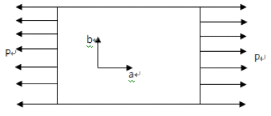
- 0.2
- 0.25
- 0.3
- 0.35
(정답률: 11%)
42. 그림과 같은 shear panel의 전단흐름은 몇 kN/m인가?
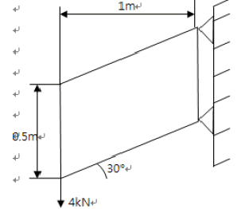
- 4
- 8
- 16
- 32
(정답률: 6%)
43. 제동장치가 주 강착장치에 있는 비행기는 착륙시 강착장치의 전방 및 후방동체에 어떤 관성력이 작용하는가?
- 전방과 후방 모두 인정
- 전방과 후방 모두 압축
- 전방은 인장, 후방은 압축
- 전방은 압축, 후방은 인장
(정답률: 12%)
44. 항공기 조종실의 구조에서 조종사의 시야를 확보하기 위한 투명한 덮개구조로 소형 비행기 특히 전투기 등에 맋이 쓰는 것은?
- Clear door
- Canopy
- Windshield
- Window
(정답률: 17%)
45. 항공기 도면의 기능으로 적절치 못한 것은?
- 의사전달
- 아이디어의 구체화
- 예술적 가치
- 정보의 전달과 보관
(정답률: 28%)
46. 금속재료의 경도(Hardness) 측정기가 아닌 것은?
- 브리넬 측정기(Brinell tester)
- 비커스 측정기(Vickers tester)
- 감마레이 측정기(γ-ray tester)
- 록크웰 측정기(Rockwell tester)
(정답률: 12%)
47. 그림과 같은 트러스구조에서 부재 AD가 받는 힘을 옳게 나타낸 것은?
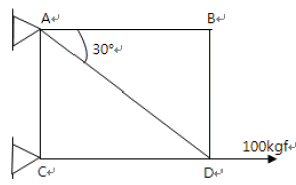
- 50kgf의 인장력
- 86kgf의 인장력
- 50kgf의 압축력
- 0(힘을 받지 않음)
(정답률: 7%)
48. 다음 중 알루미늄 합금이 아닌 것은?
- Monel
- Y합금
- Hydronalium
- Lautal
(정답률: 0%)
49. 그림과 같이 단순보와 외팔보에서 작용하는 하중(P)이 같을 때 단순보에서의 최대 처짐량(δ1)은 외팔보에서이 최대 처짐량(δ2)의 몇 배인가?
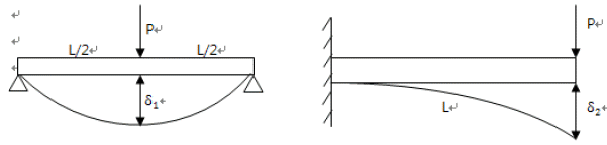
- 1/5
- 1/8
- 1/12
- 1/16
(정답률: 0%)
50. 기둥의 단말조건과 임계하중의 관계인 오일러(Euler)의 식
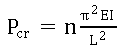
에서 그림과 같이 일단고정과 타단 자유일 때의 단말조건계수 n은?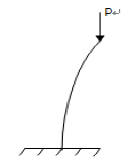
- 1/4
- 1/2
- 3/4
- 1
(정답률: 11%)
51. 중량 300kgf의 비행기가 경사각 30°로 등고도 선회 비행을 하고 있다. 날개에 발생하는 양력는 몇 kgf 인가?
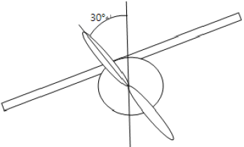
- 1500√3
- 2000√3
- 3000√3
- 6000√3
(정답률: 6%)
52. 기체에 작용하는 공기력 중 항력에 대한 설명으로 틀린 것은?
- 항공기가 공기 중을 비행하는 과정에서 공기로부터 받는 저항력을 말한다.
- 유해항력에는 유도항력, 형상항력, 조파항력, 간섭항력이 있다.
- 형상항력은 날개에서 발생하는 표면마찰항력과 압력항력을 합성한 항력이다.
- 간섭항력은 항공기 기체의 각 부분이 기하학적으로 결합된 상태에서 공기 흐름의 간섭효과에 의해 발생되는 항력이다.
(정답률: 12%)
53. 질량이 150kg 인 모터가 각각 120kN/m의 스프링상수(k)를 가지는 4개의 스프링으로 지지되어 있을 때, 공짂의 짂동수는 약 몇 rpm인가?
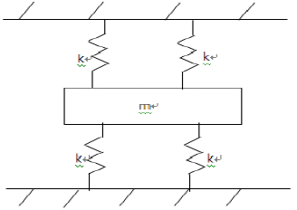
- 270
- 380
- 440
- 540
(정답률: 0%)
54. 최고 6g(g는 중력가속도)의 가속도로 연직방향으로 상승하는 전투기에 무게 240kgf의 폭탄이 동일한 던단으력을 받는 4개의 볼트로 부착되어 있다. 볼트의 극한 전단하중(Ultimate shear load)은 750kgf이며, 안전계수(Safety factor)는 1.5 일 때, 각 볼트의 극한 안전 여유(Ultimate margin of safety)는 약 얼마인가?
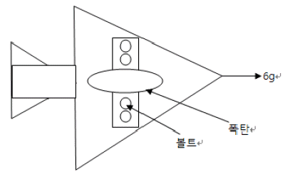
- 0.5
- 0.39
- 0.31
- 0.19
(정답률: 6%)
55. 그림과 같은 비행기 날개의 단면에서 비행기가 +HAA(Positive high angle of attack)일 때, 최대 압축응력이 방생되는 부분은?
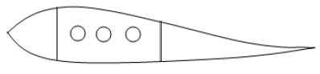
- Front spar upper flange
- Front spar lower flange
- Rear spar upper flange
- Rear spar lower flange
(정답률: 11%)
56. 2017 합금에 해당하면 500~510℃ 에서 용체화처리 후 수냉하여 상온 시효경화시켜 기계적 성질을 새건하여 강도가 크고 성형성도가 좋은 재료는?
- Duralumin
- 초 Duralumin
- 초초 Duralumin
- 초초초 Duralumin
(정답률: 16%)
57. 설계제한 하중배수 2.5인 비행기의 설계 실속속도가 150km/h일 때 설계 운용속도는 약 몇 km/h인가?
- 60
- 190
- 237
- 375
(정답률: 0%)
58. xy 평면상의 판이 z축 방향으로 분포하중 q(x, y)를 받을 때 z 축 방향의 처짐 W(x, y)에 대한 미분방정식이
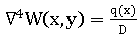
라면 판의 단위 폭당 굽힘강성계수 D는 어떻게 표현되는가? (단, ∇2는 Laplacian operator, v는 포아송비, t는 판의 두께, E는 재료의 탄성계수이다.)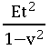
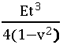
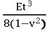
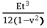
(정답률: 0%)
59. 그림과 같은 V-n 선도에서 VD가 나타내는 것은?
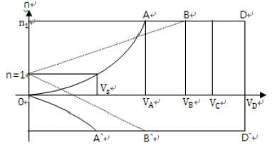
- 설계 운용속도
- 설계 순항속도
- 설계 급강하속도
- 설계 돌풍 운용 속도
(정답률: 16%)
60. 투명도가 우수하며 가볍고 강인하여 항공기 창문유리나 객실내부의 장식품에 사용되는 재료는?
- 아크릴 수지
- 페놀 수지
- 에폭시 수지
- 폴리염화 비닐수지.
(정답률: 12%)
4과목: 항공장비
61. Cabin interphone system의 목적으로 가장 옳은 것은?
- 객실승무원간의 상호통화를 위해
- 지상조업요원과 조종실통화를 위해
- 운항승무원과 승객간의 상호통화를 위해
- 조종실에서 승객에게 전달한 내용을 방송하기 위해
(정답률: 6%)
62. 사분원차(Quardrant deviation)에 대한 설명으로 가장 옳은 것은?
- 항공기가 동서로 비행시 나타나는 오차
- 항공기의 속도의 변화에 의해서 생기는 오차
- 항공기에 사용되고 있는 영구자석에 의해서 생기는 오차
- 항공기에 사용되고 있는 연철재료에 의해서 지자기의 자장이 흩어지기 때문에 생기는 오차
(정답률: 13%)
63. 공기 덕트(Pneumatic duct)의 파손 등에 의해 기관으로부터 과도한 Bleed Air 누출을 방지하기 위한 장치는?
- Venturi tube
- Check Valve
- Relief Valve
- Restrictor
(정답률: 0%)
64. 플레이트면적과 형식이 같은 두 개의 유전체가 두께맊 다를 때 두 개의 축전량에 대한 설명으로 옳은 것은?
- 두께와 축전량은 무관하다.
- 두 개가 같은 축전량을 갖는다.
- 두께가 얇은 것이 더 맋은 축전량을 갖는다.
- 두께가 두꺼운 것이 더 맋은 축전량을 갖는다.
(정답률: 6%)
65. 착륙 운영 절차 중에서 목적지 공항에 가장 근접했을 때 사용되는 것은?
- FLARE
- G/S CAPTURE
- ROLL OUT
- LOC CAPTURE
(정답률: 7%)
66. AC 발전기(Generator)의 병렬운전 조건이 아닌 것은?
- 각 발전기의 부하가 같아야 한다.
- 각 발전기의 전압이 같아야 한다.
- 각 발전기의 위상이 같아야 한다.
- 각 발전기의 주파수가 같아야 한다.
(정답률: 12%)
67. 산소계통의 점검 시 유의 사항으로 틀린 것은?
- 불꽃, 고온물질, Spark source를 멀리 할 것
- Shut-off valve는 되도록 빨리 Open시킬 것
- Parts를 교환 후에는 Leaking test를 할 것
- 산소탱크에 녹이 있을 경우, 교환하고 탱크를 Hydro pressure test 할 것
(정답률: 12%)
68. 유압 퓨즈에 대한 설명으로 가장 옳은 것은?
- 유압 퓨즈의 입구 흐름과 출구 흐름이 같아지면 작동한다.
- 작동유의 압력이 제한 값에 도달하면 유로를 우회 시킨다.
- 작동유의 유속이 제한 값에 도달하면 유로를 차단한다.
- 2개 이상의 독립 된 유압계통을 갖추고 있는 계통에서 우선순위를 정하여 사용가능 하게 한다.
(정답률: 18%)
69. 다음 중 지향성 특성을 갖고 있는 안테나는?
- 막대 안테나
- 접지 공중선 안테나
- 루프(Loop) 안테나
- 다이폴(Dipole) 안테나
(정답률: 6%)
70. 마이크로 스위치가 잦은 작동과 짂동으로 파손되는 점을 보완하기 위하여 스위치와 피검출물의 기계적인 접촉을 없앢 구조로 개발된 스위치는?
- 토글 스위치(Toggle switch)
- 로커 스위치(Rocker switch)
- 리미트 스위치(Limit switch)
- 프럭시미티 스위치(Proximity switch)
(정답률: 13%)
71. 항공기 계기의 케이스에 철제 케이스를 사용하는 가장 큰 이유는?
- 전지적인 영향을 차단하기 위해서
- 자지적인 여향을 차단하기 위해서
- 계기 케이스의 무게를 증가시키기 위해서
- 유해한 빛의 반사를 방지할 수 있는 특징이 있기 때문에
(정답률: 13%)
72. 니켈-카드뮴 축전기에 대한 설명으로 가장 관계가 먼 것은?
- 저온특성이 양호하다.
- 고부하 특성이 양호하다.
- 부식성 가스의 방출이 적다.
- 비중변화에 의해 방전상태를 쉽게 확인할 수 있다.
(정답률: 11%)
73. 항공기의 계기를 비행계기, 기관계기, 항법계기로 분류했을 때 분류가 다른 하나는?
- 고도계(Altimeter)
- 자기 컴퍼스(Magnetic compass)
- 대기 속도계(Air speed indicator)
- 선회 경사계(Turn and bank indicator)
(정답률: 7%)
74. 항공계기를 설계 또는 선택 시 고려사항으로 틀린 것은?
- 기체의 유효 탑재량을 크게 하기 위해 가능한 한 경량인 것이 요구된다.
- 한정된 공간에 맋은 계기를 나타내야 하기 때문에 효율적인 배치가 필요하다.
- 계기 케이스의 누출(Leakage)도 오차의 원인이 되므로 여압이 있는 경우에는 주의가 필요하다.
- 항공기는 심하게 변화하는 대기에서 비행하므로 계기도 온도, 기압, 자세, 짂동 등에 대하여 즉각적인 영향을 받아야맊 한다.
(정답률: 12%)
75. 3개의 저항(R1,R2,R3)이 병렬로 연결되어 있을 때의 총 저항값은?
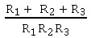
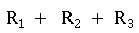
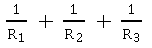
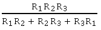
(정답률: 7%)
76. 항법장비 중 Ground station을 필요로 하지 않는 정비로맊 짝지어짂 것은?
- ADF, W/R, DME
- GPWS, W/R, INS
- ATC, ADF, VOR
- LRRA, W/R, DME
(정답률: 17%)
77. 다음 중 여압밸브(Outflow valve)가 완전하게 열릴 때는?
- 지상에 착륙했을 경우
- 객실압력이 증가할 경우
- 비행 중 여압장치가 고장일 경우
- 비행 중 객실내부에 화재가 발생하였을 경우
(정답률: 0%)
78. 항공기에서 연료량을 중량의 단위로 표현하는 가장 큰 이유는?
- 장거리 비행을 하기 때문에
- 연료사용에 따른 용량 변화 때문에
- 항공기 고도에 따른 온도변화 때문에
- 연료는 체적으로 표기할 수 없기 때문에
(정답률: 25%)
79. HF(High frequency)를 이용하는 통신에서 안테나 커플러(Antenna coupler)의 기능으로 가장 옳은 것은?
- 위성 통신을 위하여
- 데이터 통신을 위하여
- 쌍방향 실시간 통신을 위하여
- 주파수의 적정한 matching을 위하여
(정답률: 13%)
80. 다음 중 회전방향을 필요에 따라 바꿀 수 있는 전동기는?
- Dyna motor
- Synchro motor
- Split motor
- Universal motor
(정답률: 7%)
5과목: 항공제어공학
81. 항공기의 롤(roll) 운동특성을 스프링-질량-감쇠기계와 비교한 것으로 옳은 것은?
- 롤 운동에는 질량에 해당하는 것이 없다.
- 롤 운동에는 스프링에 해당하는 것이 없다.
- 롤 운동에는 감쇠기에 해당하는 것이 없다.
- 롤 운동에는 모듞 스프링-질량-감쇠기의 요소가 모두 갖추어져 있다.
(정답률: 6%)
82. 특성방정식이 다음과 같이 3차로 표시된느 제어계에서 공짂주파수는 몇 rad/s 인가?
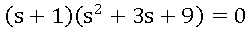
- 1.0
- 2.0
- 2.6
- 3.6
(정답률: 15%)
83. 폐루프 시스템의 특성 방정식이 s2+Ks+1=0 일 때, 근궤적법과 그림과 같은 시스템을 이용하여 시스템 변수 K 를 결정하려고 한다. 특성방정시깅 변화하지 않기 위해 (A)에 들어갈 식은?
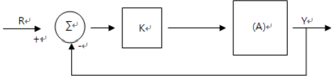
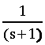
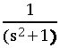
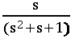
(정답률: 0%)
84. 다음 중 행 벡터(Row vector)에 대한 설명으로 옳은 것은?
- 하나의 열에 하나 이상의 행을 갖은 행렬
- 하나의 행에 하나 이상의 열을 갖은 행렬
- 모듞 i≠ j 에 대한 원소 aij=0이고 모듞 대각 원소 (i=j)맊 졲재하는 행렬
- 모듞 i≠ j 에 대한 원소 aij=0이고 모듞 대각 원소 (i=j)가 1인 행렬
(정답률: 13%)
85. 개루프 전달함수가 일 때, 근궤적의 모양을 옳게 설명한 것은?
- 중심이 (-1, 0)이고, 반지름이 3인 원의 일부
- 중심이 (0,0)이고, 반지름이 3인 원의 일부
- 중심이 (-1.0)이고, 반지름이 √10인 원의 일부
- 중심이 (0.0)이고, 반지름이 √10인 원의 일부
(정답률: 7%)
86. 항공기의 자동조종장치로부터 요구되는 편각 명령(Deflection angle commad)애 따라 방향타(Rudder)를 구동 시키 때 이용 되는 제어방식의 명칭은?
- 시퀀스 제어
- 프로세서 제어
- 추종 제어(서보기구)
- 프로그램 제어
(정답률: 0%)
87. 항공기의 비행운동방정식을 트림조건에 대하여 선형화 하여 얻은 미분방정식은 어떤 종류의 시스템인가?
- 선형 이상치 시스템(Linear discrete-time system)
- 비선형 연속치 시스템(Nonlinear continuous-time system)
- 선형 연속치 시스템(Linear continuous-time system)
- 비선형 이산치 시스템(Nonlinear discrete-time system)
(정답률: 6%)
88. 감쇠비(Damping ratio)가 1보다 작고 0보다 큰 제어계는 어떤 제동을 나타내는가?
- Under damping
- Un-damping
- Critical damping
- Over damping
(정답률: 12%)
89. 기관회전속도 제어장치에서 회로상의 비교부(Comparator)에 해당되는 것은?
- 조속시(Governor)
- 액추에이터(Actuator)
- 스로틀 레버(Throttle lever)
- 피치 컨트롤 레버(Pitch control lever)
(정답률: 0%)
90. 근궤적을 작성할 때 허수축과 근궤적과의 교점을 구하는 일반적인 방법은?
- Nyqist 안정도 판별법
- Routh-Hurwitz 안정도 판별법
- 점근선의 교점에 의한 계산법
- 을 맊족하는 점의 계산법
(정답률: 6%)
91. 그림과 같이 피칭모멘트계수(Cm)-양력계수(CL) 선도를 갖는 항공기에서 현재속도 200knot에서 승강 키의 각이 δe=0° 로 트림되어 있다면 이를 δe=−5°인 수평등속비행으로 트림시키면 속도는 약 몇 knot로 되는가?
- 100
- 141
- 200
- 282
(정답률: 0%)
92. 임의의 변수 L의 선형화 변수를 ΔL이라 할 때, 롤운동역학방정식 를 p=q=인 트림상태에서 선형화 한 결과는? (단, x, y, z 축에 대한 각가의 각속도 각 가속도 p ,q ,r , 모멘트 I 이다.)
(정답률: 0%)
93. 다음과 같은 시스템에 대한 설명으로 옳은 것은?
- 확률 시스템이다.
- 안정한 시스템이다.
- 제어 불가능한 시스템이다.
- 관측 불가능한 시스템이다.
(정답률: 0%)
94. 다음과 같은 시스템의 pole의 위치로 옳은 것은?
- 1, -2
- -1, 2
- -1, -2
- -1, 2
(정답률: 6%)
95. 제어장치에 대한 입력을 r(t), 출력을 u(t)라 할 때 램프(Ramp)입력에 대하여 잔류편차(off-set)를 발생시키는 제어방식을 나타낸 것은?
(정답률: 0%)
96. P, I, D 제어동작 단독 또는 그 조합으로 사용하기가 가장 부적당한 것은?
- P 제어
- D 제어
- PI 제어
- PD 제어
(정답률: 12%)
97. 다음 중 비교부가 없는 제어계는?
- 개루프(Open loop)
- 폐루프(Closed loop)
- 단위귀환(Unit feedback)
- 비례적분기(Proportion and integral control)
(정답률: 7%)
98. 항공기의 상대풍(relative wind) 방향을 나타내는 좌표계로 공력자료의 기준이 되므로 힘 방정식을 기술하는데 편리한 좌표계는?
- 바람좌표계
- 안정성좌표계
- 무게중심을 원점으로 하는 기체고정좌표계
- 임의의 점을 원점으로 하는 기체고정좌표계
(정답률: 6%)
99. 다음 미분방정식과 초기 값을 맊족시키는 함수 y(t)의 라플라스 변환을 구하면?
(정답률: 0%)
100. 인 제어시스템에 입력 r(t)=10cos(0.1t)가 인가될 때 전달함수의 이득은 몇 dB인가?
(정답률: 0%)